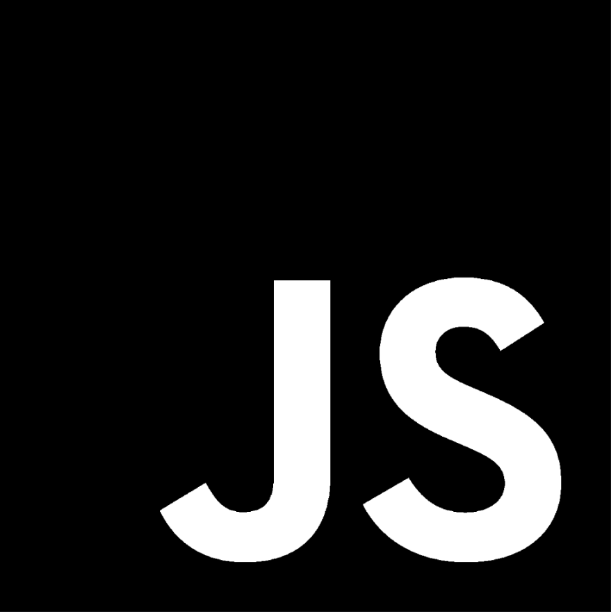
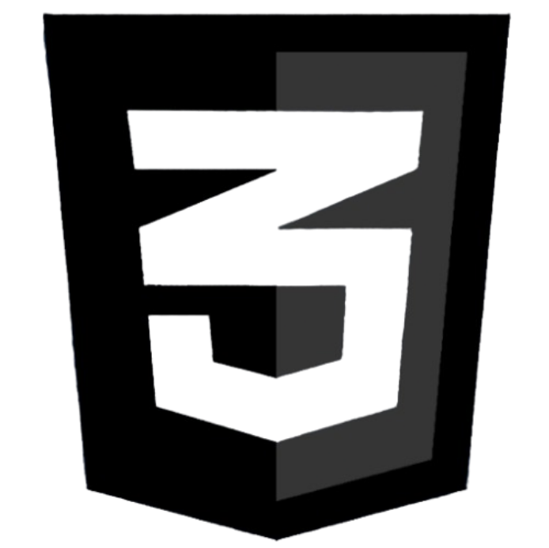
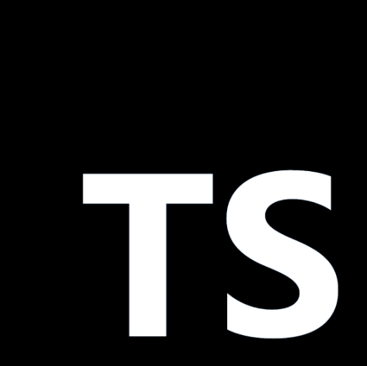
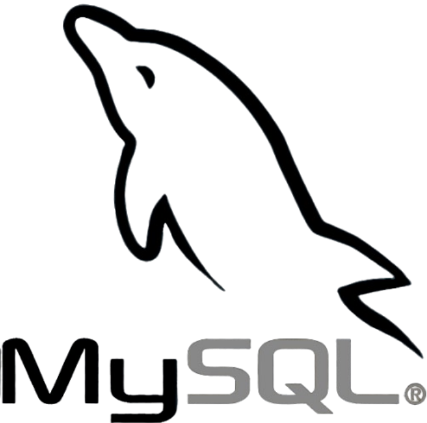
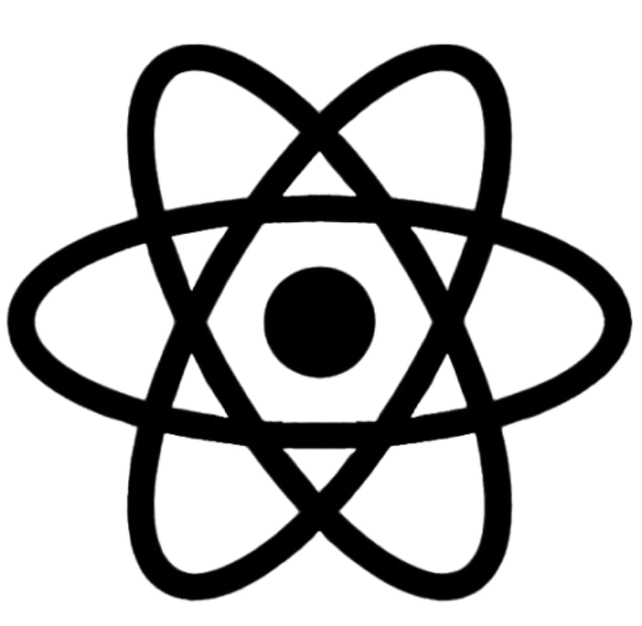
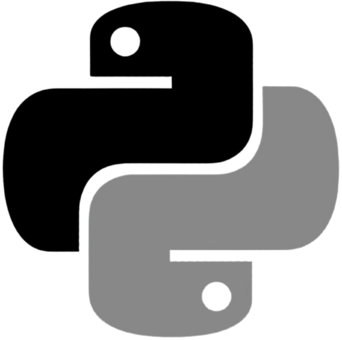
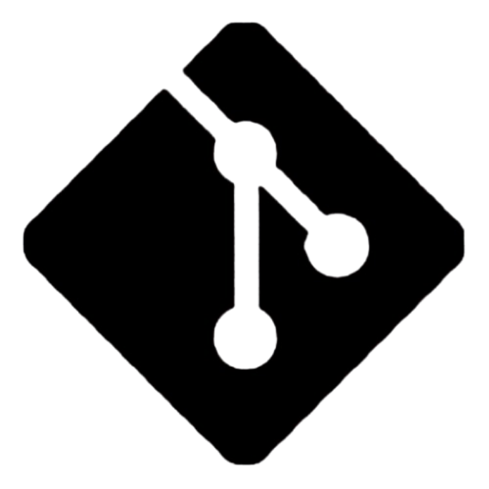

The art of software development.
Victor Lima - Software Developer
The art of software development.
Victor Lima - Software Developer
My name is Victor Lima. I am a software development student and developer focused on building practical, user-centered solutions. I have experience with web development, databases, data analysis and interface design, and I am always looking to improve my technical and collaborative skills through academic, personal and professional projects.
Full Stack Development, Web Development, Software Engineering, Database Management, Data Analysis, User Interface (UI) Design, User Experience (UX), Artificial Intelligence, Business Intelligence and Technology Innovation.
Portuguese - Native
English - Intermediate
My goal is to build a successful career in the technology industry as a Software Developer, creating innovative and efficient solutions that generate real value for users and businesses. I aim to continuously improve my skills in software engineering, web development, databases and emerging technologies while contributing to challenging projects and collaborative teams. In the future, I hope to take on greater responsibilities, participate in large-scale projects and become a reference in the field through constant learning and professional growth.
Systems Development Technician – SENAI
2023 – 2024
Technologist in cross-platform software development – FATEC
2025.2 – Present
Microsoft - Power Bi 900
Github










